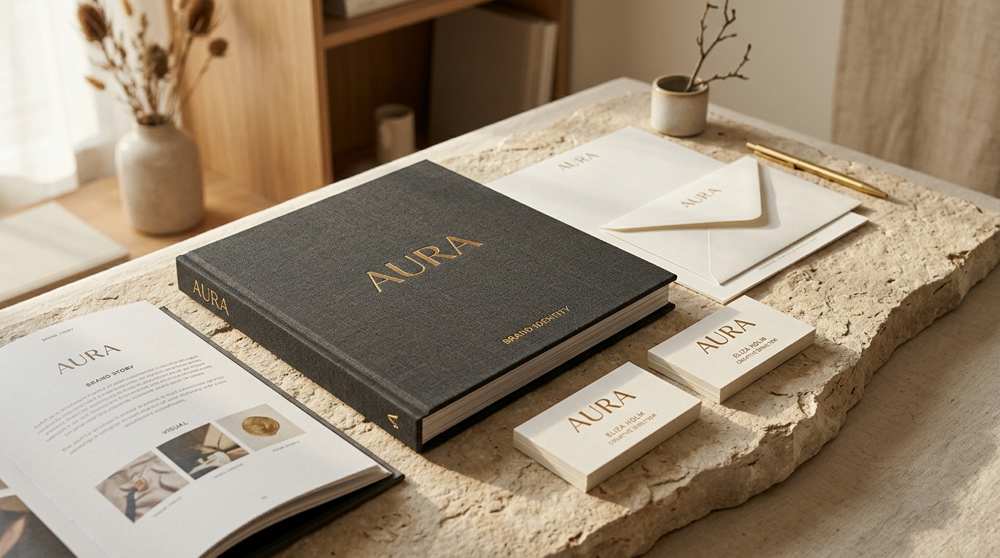

Aplikasi Absensi Karyawan — GPS & Selfie
Mengembangkan sistem absensi karyawan berbasis website dengan fitur GPS dan selfie, mulai dari frontend, backend, database, hingga integrasi sistem dan pengelolaan permohonan izin.
GPS
Validasi lokasi absensi
Selfie
Verifikasi kehadiran
Full
Frontend hingga database